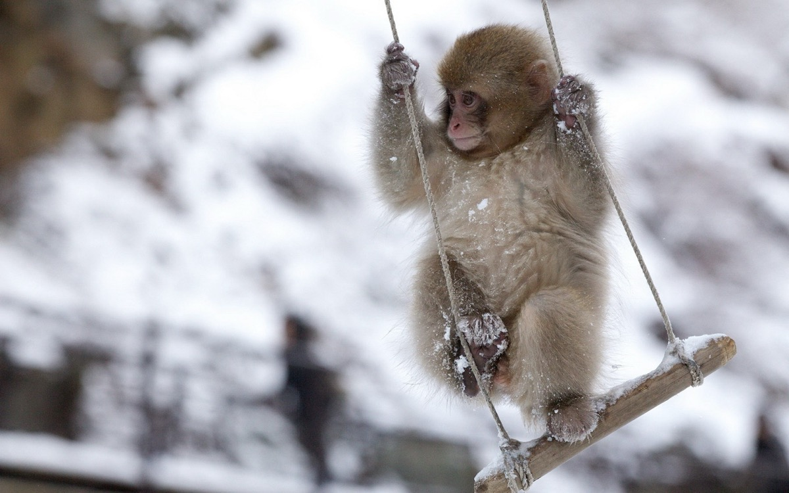

Maimuțica
După-atâta zbenguială
Colo-n jungla tropicală
A gasit vieții-un remediu
Și a plecat în concediu
Făcând marea escapadă
Într-o țară cu zăpadă
În parcul copiilor
Țara jucăriilor.
Obișnuită cu crenguța
Acum se dă huța-huța
Îmbrăcată ca de iarnă
Unde cerul dă să cearnă
Cu steluțe sclipitoare
Ce se-așează-n plăpumioare
Ea o strânge în grămadă
Făcănd o maimuță de zăpadă!
Vasile Groza
Apare și în: Poezii cu animale.